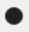
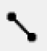
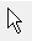
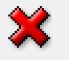
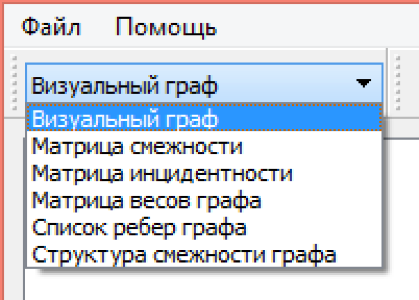

Возможности программы:
1. вводится описание графа для заданного типа представления;
2. программа переводит это описание в другие типы представления;
3. результаты выводятся на экран и в текстовый файл;
4. преобразовать заданный тип описания в графическое представление графа на экран и в файл;
5. реализовать графический ввод графа с экрана.
Чтобы начинать работать с программы, необходимо щелкнуть на меню Файл - Новый граф, и выбрать тип описания графа:
Чтобы добавить вершину, необходимо щелкнуть на кнопку , и затем щелкнуть в нужном месте на канвасе.
Чтобы добавить ребро между вершинами, необходимо щелкнуть на кнопку , затем щелкнуть на первую вершину и, не отжимая кнопку мыши, навести курсор на вторую вершину и отпустить кнопку мыши.
Чтобы добавить ребро между вершинами, необходимо щелкнуть на кнопку , затем щелкнуть на первую вершину и, не отжимая кнопку мыши, навести курсор на вторую вершину и отпустить кнопку мыши.
Чтобы перевестить место вершину, нажимать на кнопку , затем щелкнуть на вершину, не отжимая кнопку мыши, перевести вершину на новую место, отпустить кнопку мыши для завершения.
Чтобы удалить вершину или ребро, нажимать на кнопку , затем щелкнуть на вершину или ребро, которые вы хотели удалить, потом для удаления либо из клавиатура, нажимать DELETE, либо щелкнуть на кнопку 
Для добавления весов ребер, надо двойной щелчок в ребро, затем появиться диалог что вводить вес ребра.
Для переводить в другие типы представления, выбрать типы представления в падающие списки.

Меню Файл - Сохранить/Открыть позволяет сохранить текущий граф в файл или загрузить существующий граф.